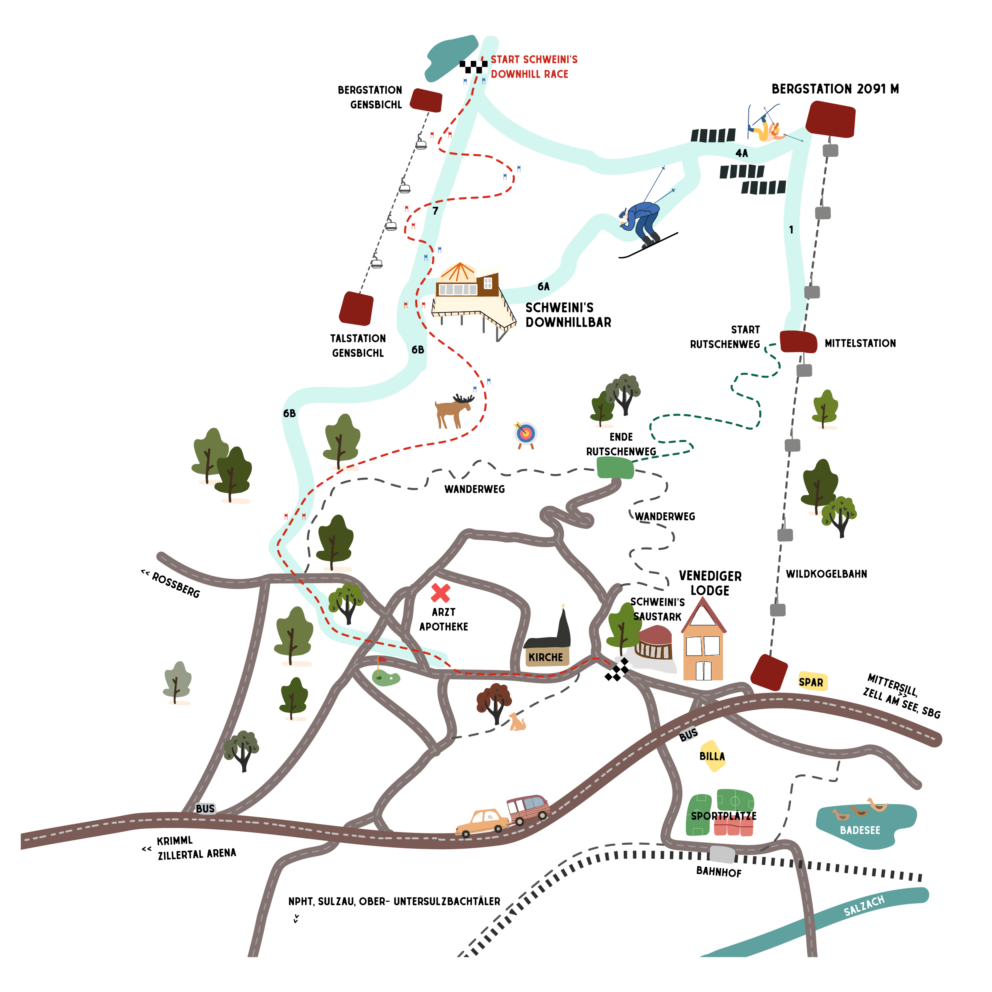
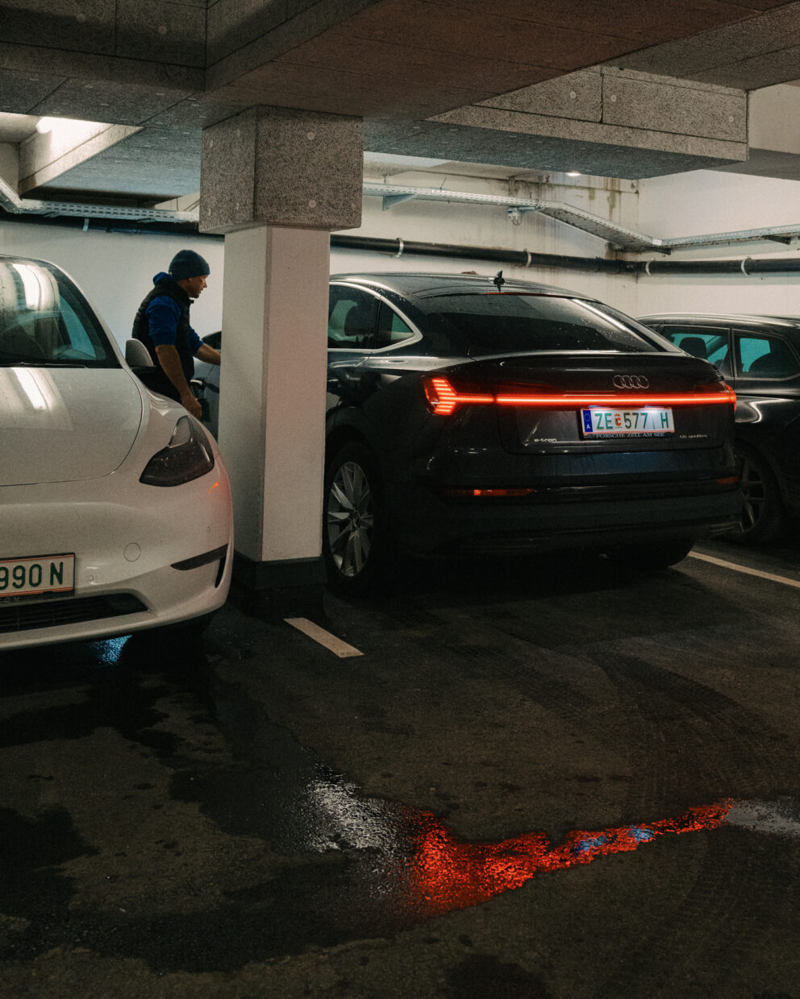
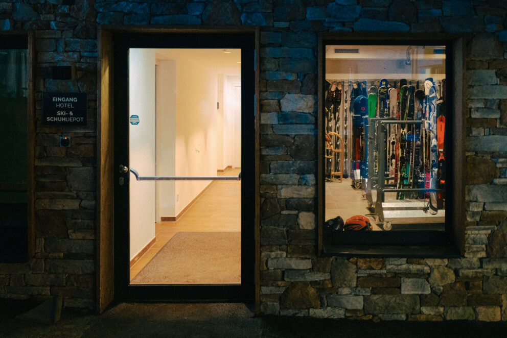

Hier entlang – zur guten Seite des Tals.
In der weiten, offenen Talboden zwischen Hohe Tauern und Wildkogel zeigt sich der Oberpinzgau von seiner ruhigsten und zugleich eindrucksvollsten Seite. Die Berge wechseln im Laufe des Jahres ihr Kleid – einmal sattgrün, dann goldgetönt, später glasklar im Winterlicht.
Jeder Tag hat hier seine eigene Stimmung, und oft reicht ein Blick aus dem Fenster, um die Sonnenbrille zur Hand zu nehmen. Ankommen fällt hier leicht. Die Wege sind kurz, die Natur nah, der Alltag weit weg.
Und mittendrin liegt die Venediger Lodge – großzügig, warmherzig und genau der richtige Platz, um durchzuatmen, aufzutanken und sich einfach zuhause zu fühlen.

Die 2,25 m hohe Tiefgarage bietet einen hoteleigenen Waschplatz für Bikes und Sportequipment sowie einen direkten, wettergeschützten Zugang ins Haus.
Pro Suite oder Appartement ist ein kostenloser Stellplatz inkludiert. Insgesamt stehen 70 Plätze bereit, davon 11 mit E-Ladestationen (€ 20,- für 24 Stunden). Weitere Fahrzeuge können am Outdoor-Hotelparkplatz abgestellt werden.
Wer eine E-Ladestation benötigt, gibt am besten bereits bei der Buchung oder vor der Anreise Bescheid. Über die Tiefgarage gelangt man direkt in den abschließbaren Ski- und Bike-Raum oder mit den zwei Liften bequem in jedes Stockwerk.


Der großzügige Ski- und Bike-Raum ist ideal für alle Aktivitäten rund um Neukirchen am Großvenediger – Skifahren, Biken oder Wandern. Die gesamte Ausrüstung findet hier ausreichend Platz.
Im Winter stehen Skischuhtrockner und Skiständer zur Verfügung, im Sommer Schuhtrockner und Bike-Lademöglichkeiten. Der Raum ist übersichtlich, gut zugänglich und so ausgestattet, dass alle Gäste komfortabel starten und entspannt zurückkommen.
Venediger Lodge · Marktstraße 64 · 5741 Neukirchen · Österreich
+43 6565 6204 · info@venediger-lodge.at
Rezeption: 08:00–20:00 · Check-in: 14:00–20:00 · Check-out: bis 11:00